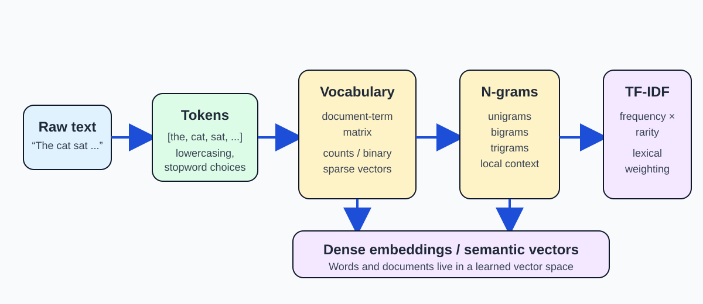

3.1 Feature Engineering and Vector Representations#
The central idea of this week is simple: before a machine can compare, classify, cluster, or retrieve text, that text must be converted into numbers.
This transformation is not just a technical detail. The representation we choose changes what information is preserved, what is lost, and how a downstream model behaves. A naïve representation may capture surface word overlap, while a richer representation may capture context or semantic similarity.

Fig. 9 From text to numerical representation.#
From text to feature vectors#
A text document is a sequence of symbols, but most NLP algorithms expect a fixed numerical representation. The first step is usually to tokenize the text into units such as words or subword pieces, then build a vocabulary of the tokens that appear in a corpus.
Once the vocabulary is defined, each document can be represented as a vector whose entries correspond to the vocabulary items. This is the basic idea behind the document-term matrix.
A document-term matrix has:
one row per document,
one column per vocabulary term,
and cell values that reflect some measure of term importance, such as raw count or TF-IDF weight.
This representation is called a sparse vector because most entries are zero for any single document. The vocabulary may be very large, but each document usually contains only a small subset of the terms.
Note
The vocabulary is not just a list of words. It is the model’s working definition of what counts as a token in the dataset. That choice shapes every later representation.
Bag-of-Words and document-term matrices#
The simplest document representation is the bag-of-words model. It discards word order and treats a document as an unordered collection of tokens.
For the two short documents below:
Document 1: “the cat sat on the mat”
Document 2: “the dog sat on the log”
The vocabulary is:
{the, cat, sat, on, mat, dog, log}
A document-term matrix could look like this:
Term |
D1 count |
D2 count |
|---|---|---|
the |
2 |
2 |
cat |
1 |
0 |
sat |
1 |
1 |
on |
1 |
1 |
mat |
1 |
0 |
dog |
0 |
1 |
log |
0 |
1 |
This representation is useful because it makes it easy to compare documents numerically, but it also makes an important assumption: word order is ignored. That is why a bag-of-words model may treat two sentences with the same vocabulary as similar even if their meanings differ.
Binary versus count-based features#
A count representation records how often each term appears. A binary representation records only presence or absence.
For example, if the term “the” appears twice in one document and once in another, the count vector captures that difference. But the binary vector would treat both documents as having the token present.
This distinction matters because some tasks are more sensitive to repeated emphasis, while others mainly care whether a term is present at all.
N-grams and local context#
One way to preserve some local ordering is to use n-grams. An n-gram is a sequence of n adjacent tokens.
unigram: “the”, “cat”, “sat”
bigram: “the cat”, “cat sat”
trigram: “the cat sat”
N-grams are useful because they preserve limited context. A bag-of-words model loses sequence information, while a bigram or trigram model may preserve a few important word combinations, like “New York” or “not good”.
However, n-grams also increase the vocabulary size very quickly. A model that uses too many n-grams may become high-dimensional and sparse, which is why practitioners often combine them with careful preprocessing and feature selection.
TF-IDF: balancing frequency and rarity#
A raw count is not always the best measure of importance. Very common words such as “the”, “is”, or “and” may appear often in almost every document, but they do not necessarily help distinguish one document from another.
This is where TF-IDF is useful. It combines:
term frequency (TF): how often a term appears in a document,
inverse document frequency (IDF): how rare the term is across the corpus.
The intuition is simple: a term is more informative when it appears often in one document but not across many documents.
The formula for term frequency is:
The inverse document frequency is approximately:
where \(N\) is the total number of documents and \(DF(t)\) is the number of documents containing term \(t\).
Then:
Compact worked example#
Suppose a corpus has two documents:
Document 1: “the cat sat on the mat”
Document 2: “the dog sat on the log”
For the term “the”:
\(TF(\text{the}, D_1) = 2/6\)
\(TF(\text{the}, D_2) = 1/6\)
\(DF(\text{the}) = 2\)
\(IDF(\text{the}) = \log(2/2) = 0\)
So:
and
The word “the” is common across the corpus, so it gets a low weight.
Now consider the term “cat”:
\(TF(\text{cat}, D_1) = 1/6\)
\(DF(\text{cat}) = 1\)
\(IDF(\text{cat}) = \log(2/1) \approx 0.69\)
So:
This makes sense: “cat” is informative because it appears in one document and not the other.
Important
TF-IDF is not magic, and it is not a representation of meaning in the deep semantic sense. It is a good lexical weighting scheme that upweights terms that are both frequent within a document and relatively rare across the corpus.
It is also worth noting that classical lexical ranking methods such as BM25 are related to this intuition, but they are not simply interchangeable with a basic TF-IDF vectorizer. BM25 is a classical lexical ranking method that incorporates term-frequency and inverse-document-frequency-style weighting [MRS09].
Sparse lexical vectors and dense embeddings#
Count vectors, binary vectors, and TF-IDF vectors are all sparse lexical representations. They are useful because they are easy to interpret and often very effective for straightforward text classification and retrieval tasks.
However, they also have major limitations:
they ignore word order,
they usually treat words as separate dimensions,
they cannot easily capture synonymy or semantic similarity,
and they can become very large and sparse as the vocabulary grows.
This is one reason embeddings became so important. Dense embeddings map words, phrases, or documents into a lower-dimensional vector space where semantically similar items are located near one another.
This is a different design from the sparse lexical vectors above. A sparse vector may represent a document by measuring the presence or importance of each word. A dense embedding may represent the same document in a latent space where similarity is learned from patterns in large corpora.
CBOW as a bridge concept#
Word2Vec introduced a very influential approach to learning dense word vectors. The Continuous Bag of Words (CBOW) model predicts a target word from its surrounding context words. In contrast, Skip-gram predicts surrounding words from a target word [MCCD13].
CBOW is mainly a historical bridge and conceptual stepping stone here. It helps explain why dense word vectors can capture distributional similarity: words that appear in similar contexts tend to end up near one another in a learned vector space. This idea is foundational for more modern embedding-based systems.
Note
CBOW is a useful bridge concept in Week 03, but it is not the main topic of the week. The main conceptual goal is to understand how text becomes a vector and why representation choice matters.
Why representation choice matters#
Representation choice affects downstream behavior:
count vectors are transparent and easy to inspect,
TF-IDF can weight unique terms more strongly,
n-grams can capture local phrase structure,
dense embeddings can model semantic similarity.
No representation is universally best. A simple lexical model may work well for exact-term retrieval or simple classification, while a dense embedding model may work better when semantic similarity matters.
That is why it is valuable to understand classical vector space models before moving to embedding-based systems.
Week 04 bridge: similarity, clustering, and retrieval#
Week 04 will build on this foundation by asking a new question: once text has been converted into vectors, how do we compare vectors numerically?
This leads to:
similarity scores,
document clustering,
nearest-neighbor search,
and semantic retrieval.
The main Week 03 takeaway is therefore this: a vector representation is not an end in itself. It is a numerical interface that allows later systems to compare documents, retrieve relevant results, and support downstream NLP tasks.
Summary#
This week introduces the conceptual path from text to vector representation:
text → tokens → vocabulary → document-term matrix → n-grams → TF-IDF → sparse lexical vectors → dense embeddings
This sequence matters because it shows how NLP systems move from raw language to computational representations that can be compared, ranked, and learned from. The core lesson is not merely that we can convert text to numbers, but that the choice of representation determines what information is preserved and what is lost.